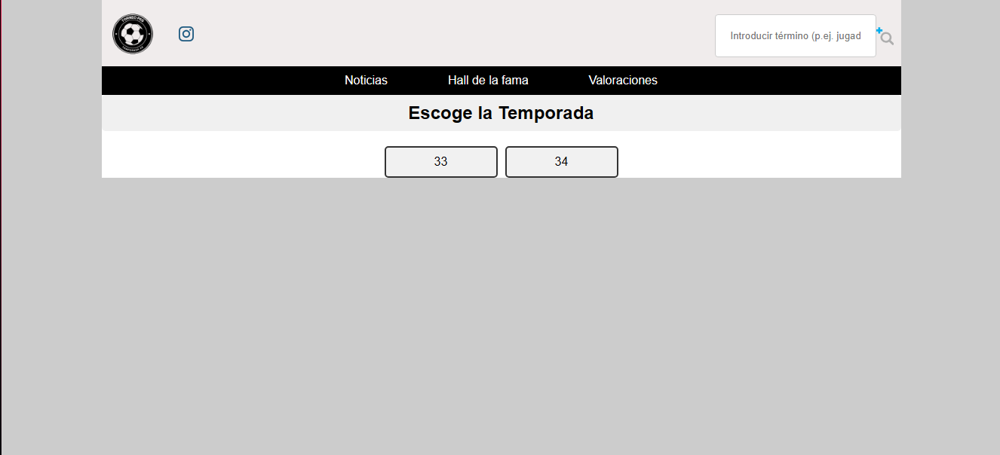

En un movimiento que promete revolucionar la forma en que los DT del torneo seleccionan a sus jugadores, se ha lanzado la actualización 1.2, que permite visualizar las calificaciones de rendimiento de los jugadores dando paso a comprar o no comprar jugadores.
Actualización 2.1
Mteflai · 02 de diciembre de 2024

Esta innovadora herramienta permite a los usuarios acceder a una base de datos actualizada con las calificaciones de los jugadores, viendo así, su desempeño dentro del campo.
Con esta actualización, los entrenadores podrán tomar decisiones más informadas al momento de seleccionar a sus jugadores, lo que puede tener un impacto significativo en el éxito de su equipo, y a su vez,saber si vender o no vender un jugador propio.
"Será un juego cambiante para la forma en que se seleccionan a los jugadores del torneo" dijo parte del staff.
"Será un juego cambiante para la forma en que se seleccionan a los jugadores del torneo" dijo parte del staff.
La actualización 1.2 ya está disponible para su uso,y como puedo acceder a ella te preguntarás, fácil, entras a la página,vas al apartado llamado "valoraciones", ahí escoges que temporada quieres visualizar, elige el club al que quieres ver y listo, tendrás las calificaciones actualizadas de los jugadores de sus respectivos clubes.